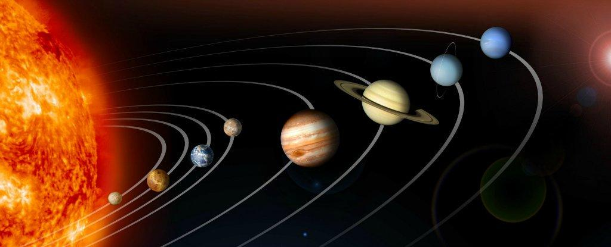
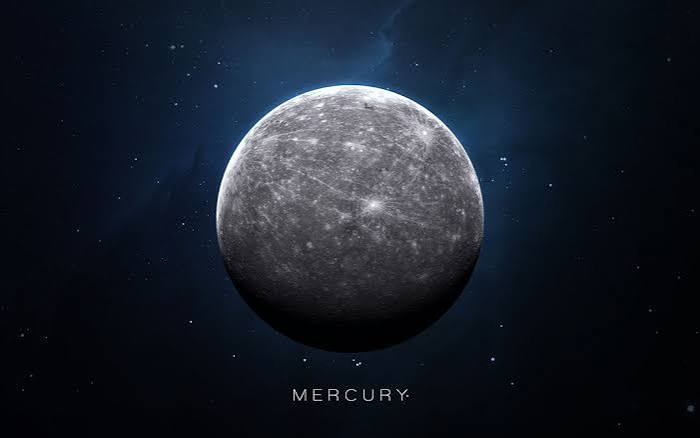
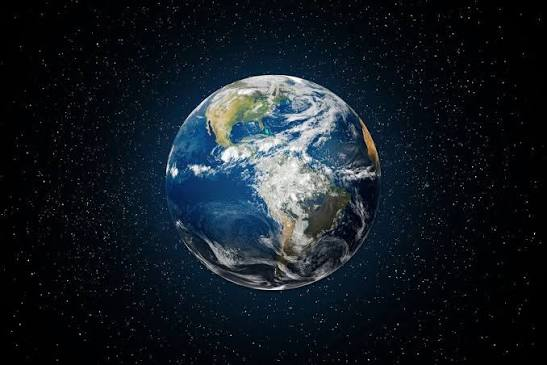
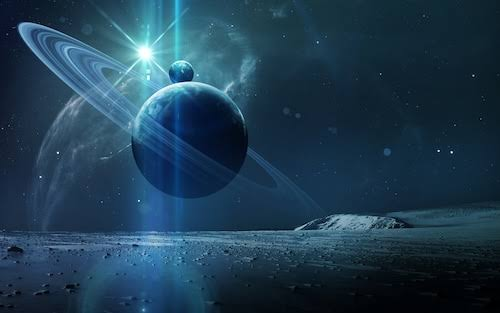

Explore the Wonders of Our Solar System
Discover the 8 planets, their unique features, and amazing facts about our cosmic neighborhood.
Home | Explore Planets | Space Facts | About Us

Our Solar System consists of the Sun and eight amazing planets.
Each planet has its own unique characteristics, atmosphere, and mysteries.
START EXPLORINGClick on any planet to explore its details.

The hottest planet in our Solar System.

Our home planet and the only known planet to support life.

An ice giant with a unique tilted rotation.
Mercury is the smallest planet in our Solar System.
Earth is our home planet. It supports life and has liquid water on its surface.
Uranus is an ice giant with a blue-green appearance.
Cosmic Explorer is a simple educational space encyclopedia designed to help students explore the Solar System.
Learn about planets, discover interesting facts, and explore the wonders of space.